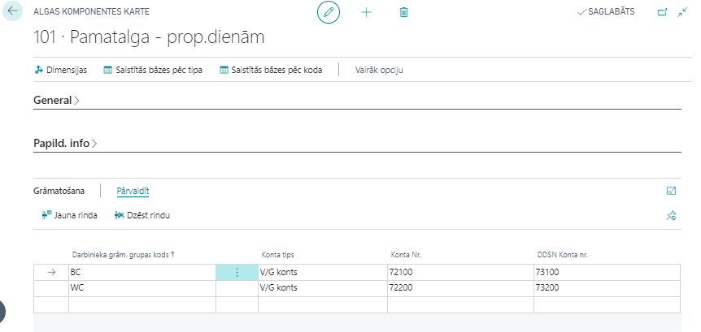

Algas Komponentes
Algas aprēķins tiek veidots no dažādām algas komponentēm – ienākumiem, atvilkumiem, atvieglojumiem, nodokļiem, utt. Visas komponentes ir apkopotas sarakstā Algas komponentes.
Tip
Parasti lielākā daļa no šīm komponentēm ir kopīga visiem uzņēmumiem un tiek sagatavotas iepriekš, veidojot jaunu bāzi klientam. Tāpēc nav ieteicams šīs vērtības dzēst un modificēt bez konsultācijas ar ELVA konsultantiem.
Katras komponentei ir atsevišķa kartiņa, kurā tiek veikti iestatījumi, un ir iespējams piesaistīt dimensijas  un apskatīt aprēķinu bāzes, kurās konkrētā komponente tiek izmantota, noklikšķinot uz
un apskatīt aprēķinu bāzes, kurās konkrētā komponente tiek izmantota, noklikšķinot uz  un
un 
Cilne: Visp. info

| Lauka nosaukums | Apraksts |
|---|---|
| Kods | Brīvi definēts kods. |
| Tips | Izvēlas no saraksta atbilstošo tipu. |
| Nosaukums | Brīvi definēts komponentes nosaukums. |
| Prioritāte | Norāda konkrētās komponentes vietu algas aprēķināšanas darbību ķēdē – jo mazāks skaitlis, jo augstāka prioritāte. Tādējādi šī komponente ātrāk tiks iesaistīta algas aprēķinā. Veidojot jaunu algas komponenti, prioritāte iekrīt automātiski, vēlams pašiem bez vajadzības nemainīt. |
| Aprēķina veids | Jāizvēlas, kā komponente tiks rēķināta – Proporcionāli nostrādātām dienām, Proporcionāli nostrādātām stundām, Proporcionāli kalendārām dienām, Stundu, Dienu, Gabaldarbs, Neapliekamais limits (uzkrājošs), Neapliekamais limits (neuzkrājošs), Avanss. |
| Daudzuma tips | Nepieciešams noradīt kādas mērvienības jāizmanto, aprēķinot virsstundas tabelē. |
| Derīgs līdz | Līdz kādam datumam komponente ir spēkā. |
| Derīguma skaidrojums | Brīvi definējams teksts, kurš tiks atspoguļots, aprēķinot algas, kļūdas paziņojumā gadījumā, ja komponente jau nav spēkā. |
| Soc. statusa kods | Norāda pie sociālā nodokļa komponentes atbilstošu sociālā statusa kodu. |
| Noklusētā darbinieka komponente | Atzīme, vai šī komponente aizpildās automātiski, veidojot algas komponentes darbinieka kartiņā. |
| Apgādājamo skaits | Tiek aizpildīts pie atvieglojumu par apgādājamajiem komponentes – ieliek atbilstošo apgādājamo skaitu. |
| Invaliditātes grupa | Tiek aizpildīts pie atvieglojumu par invaliditāti komponentes – aizpilda atbilstošu grupu. |
| 1. globālās dimensijas kods | Ja nepieciešams, norāda 1. globālo dimensiju algas komponentei. |
| 2. globālās dimensijas kods | Ja nepieciešams, norāda 1. globālo dimensiju algas komponentei. |
| Nedrukāt algas lapiņā | Norāda, ka informācija par šo algas komponenti netiks drukāta algas lapiņā. |
Cilne: Papild. info

| Lauka nosaukums | Apraksts |
|---|---|
| Neto summa | Ievieto atzīmi, ja aprēķinā tiek izmantota neto summa. Gadījumā, ja neto komponentei ir reģistrēta summa ar mīnuss zīmi, šī summa tiks uzskatīta par bruto summu. |
| Virsstundu algas komponente | Norāda piesaistīto Virsstundu algas komponenti. |
| Svētku stundu algas komponente | Norāda piesaistīto Svētku stundu algas komponenti. |
| Nakts stundu algas komponente | Norāda, piesaistīto Nakts stundu algas komponenti. |
| Kompensējamo stundu komponentes kods | Norāda algas komponenti, kura tiek izmantota algas aprēķinā, kompensējot svētku stundas, kuras iekrīt darbiniekam normālajā darba laikā un šajā dienā darbinieks neveica darbu. |
| Gada limita pārsniegtās summas komp. kods | Norāda algas komponentes kodu, kurš tiks izmantots algu aprēķinā gadījumā, ja pārsniegts šīs komponentes limits. |
| Atvieglojumu pieejama summa | Bāze, kura definē atvieglojumu summu dotai komponentei. |
| Nepiemēr. atviegloj. komponentes kods | Norāda algas komponentes kodu, kurš tiks piemērots nepiemēroto atvieglojumu pārnešanai uz nākošo mēnešu algu aprēķiniem. |
| IIN 2. līmeņa komponentes kods | 2. līmeņa IIN bāzes kods. |
| IIN 3. līmeņa komponentes kods | 3. līmeņa IIN bāzes kods. |
| Vienmēr lietot aprēķina periodu | Norāda, ja ir nepieciešams IIN aprēķinam lietot tekošo aprēķina periodu. |
| Dalīt atbilstoši saistītajām komponentēm | Komponentes veidojas no uzstādījumiem (bāzes summām) un dalās atbilstoši komponentēm, kuras ir bāzes summās. |
| Pamatalga | Norāda kura komponente tiek atzīta kā pamatalgas komponente. |
| Svētku dienu apmaksa atvaļ. laikā | ievieto atzīmi pie pamatalgas komponentes, ja vēlas, lai tiktu aprēķināta samaksa par svētku dienām (kuras iekrīt darbinieka darba dienā) atvaļinājuma laikā. Ja atvaļinājuma laikā iekrīt svētku diena, tad sistēma par šīm dienām samazina atvaļinājuma izmantoto dienu skaitu. |
| Svētku dienas brīvdienā vidējā apmaksa | Atzīmējot šo lauku pie pamatalgas komponentes, ja darbinieka brīvdienā “iekrīt” svētku diena, kas pēc valstī noteiktā kalendāra “iekrīt” darba dienā – tad par šo dienu tiek aprēķināta vidējā izpeļņa. Lai par šo dienu aprēķinātu vidējo izpeļņu, darbinieka kartiņā sadaļā Algas komponentes jābūt atzīmei pie Apmaksāt svētku stundas. |
| Netiek grāmatota uz V/G | Norāda, ka atbilstošās komponentes dati netiks grāmatoti uz virsgrāmatu. |
| Algas norēķinu konts | Norāda atbilstošo virsgrāmatas kontu, kurā tiks grāmatoti Norēķini par darba algu. |
| Grāmatošanas grupas konta zīme | Norāda grāmatošanas grupas pusi: debets vai kredīts. |
| Iekļaut nulles summu | Ieslēdz, ja jāveido algas rindu ar 0 summu (nav iespējas ieturēt summu, bet pastāv iespēja, ka lietotājs koriģēs atvilkuma summu). Ģenerēt rindu vajag, lai būtu iespēja pārskaitīt naudu trešajām pusēm. |
Cilne: Grāmatošana

| Lauka nosaukums | Apraksts |
|---|---|
| Darbinieka grām. grupas kods | Izvēlas no saraksta, uz kuru grupu attiecas šī komponente. |
| Konta tips | Iespējamie varianti : virsgrāmatas konts; piegādātājs vai klients. |
| Konta Nr. | Darba algas konta Nr. izvēlas no saraksta (vai piegādātāju/klientu, ja tips ir piegādātājs/klients). |
| DDSN Konta Nr. | Norāda Darba dev.soc.nod. izmaksu Konta Nr. DDSN var grāmatot dažādos izmaksu kontos, kas norādīti katrai darbinieka grāmatošanas grupai. |
Cilne: Uzstādījumi
| Lauka nosaukums | Apraksts |
|---|---|
| No datuma | Norāda, no kura datuma šī vērtība ir spēkā. |
| Vērtība | Norāda vērtību, ja tā ir konstanta. |
| Aprēķināt pēc | Norāda vai ievadītā vērtība būs summa vai % |
| Bāze | Ja ir izvēlēti %, tad norāda bāzi, no kuras (bāzes) summas tiks rēķināti %. |
| Bāzes gada summas limits | Tiek norādīts limits, pēc kura pārsniegšanas netiek veikti aprēķini. |
| Nosaukums | Brīvs aizpildāms lauks. |